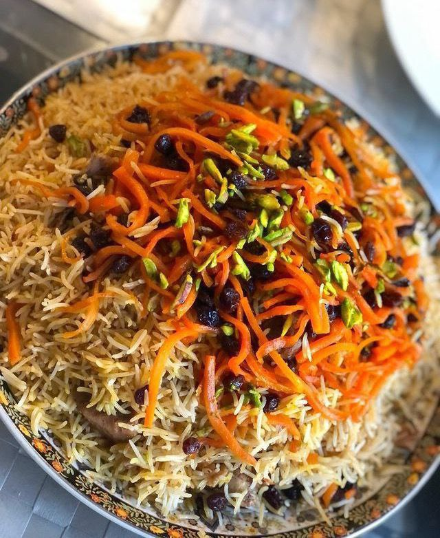

Afghan Polo
Afghan Polo is a delicious rice dish with tender meat, vegetables, and fragrant spices, often enjoyed on special occasions.
View Full RecipeAfghan Polo is a delicious rice dish with tender meat, vegetables, and fragrant spices, often enjoyed on special occasions.
View Full RecipeMantu is a steamed Afghan dumpling filled with spiced ground meat and onions, usually served with yogurt and tomato sauce.
View Full Recipe
Ashak is an Afghan dumpling filled with leeks and served with a rich meat sauce, yogurt, and dried mint.
View Full Recipe
A sweet and delicious dessert made with thin layers of filo dough, ground nuts and a sweet syrup.
View Full RecipeA thick, creamy dessert made from milk, rice flour, sugar, and rose water, often garnished with pistachios or almonds.
View Full RecipeA crispy, circular sweet fried in oil and then soaked in thick syrup.
View Full Recipe
A traditional Afghan tea made with milk, cardamom, sugar, and rose water, particularly popular in colder weather.
View Full RecipeA refreshing yogurt-based drink, often flavored with mint and salt, perfect for hot days.
View Full RecipeA traditional tea brewed with saffron, offering a distinctive color and flavor, typically served with sugar or honey.
View Full Recipe